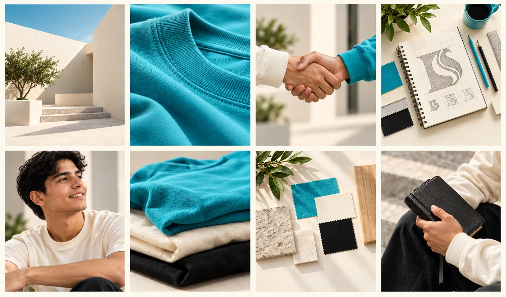
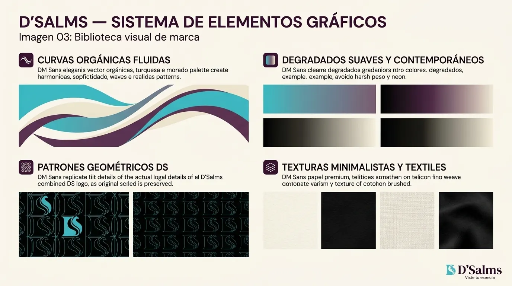
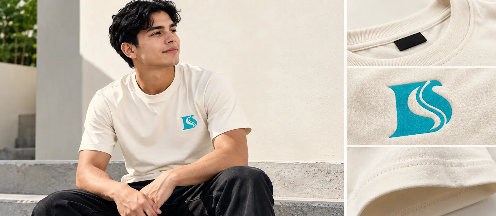
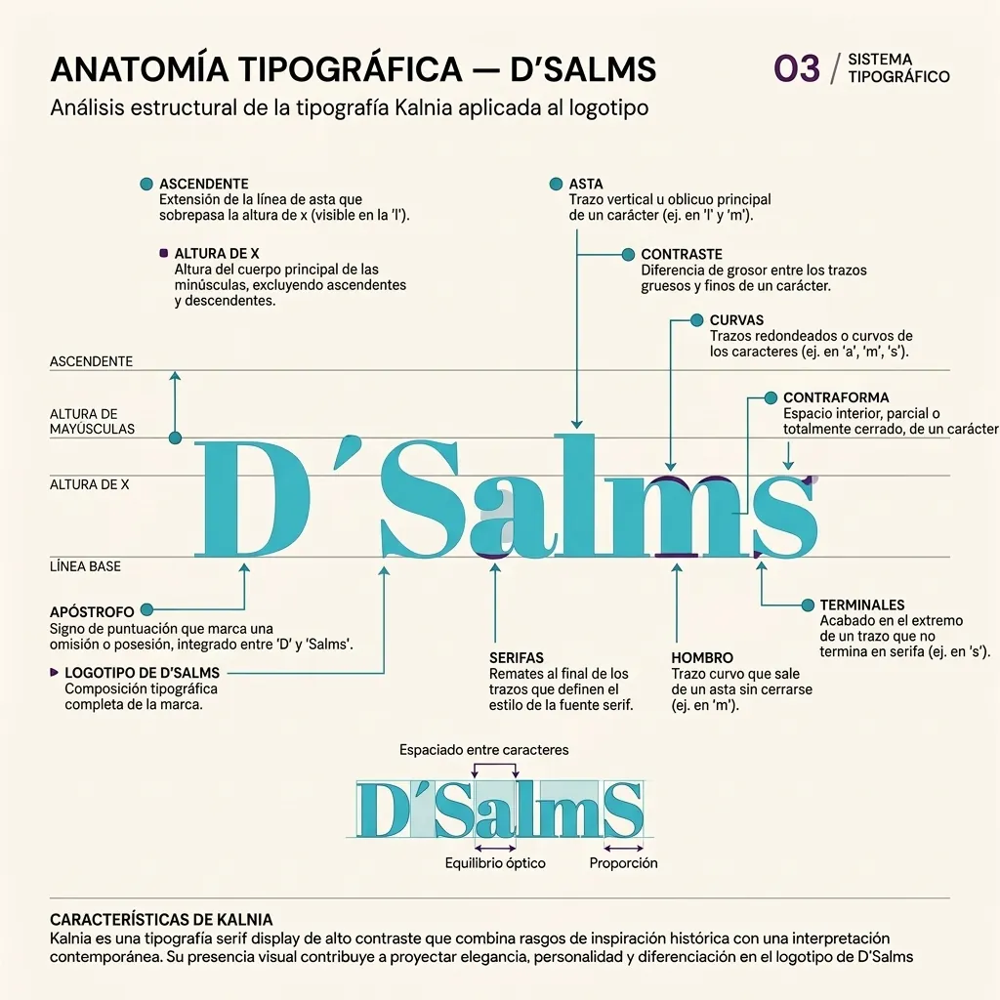
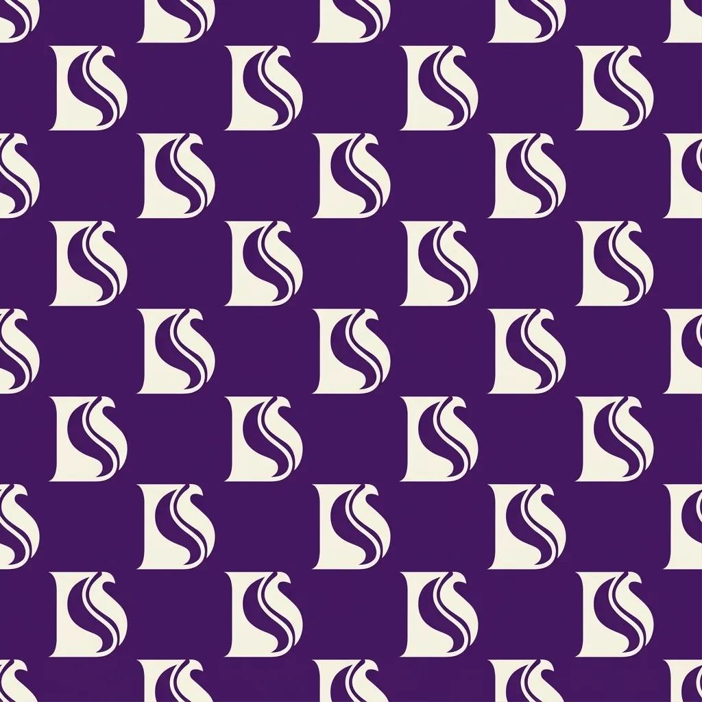

Aa Bb Cc
ABCDEFGHIJKLMN
Kalnia · títulos
Serif display de alto contraste, referencias victorianas reinterpretadas. Solo en titulares y frases cortas.
04 · ¿Cómo nos vemos?
La identidad visual reúne los elementos que hacen reconocible a la marca.
Símbolo arriba, nombre debajo en Kalnia. La D es la estructura (bloque vertical, esquinas redondeadas); la S aparece dentro mediante curvas y espacio negativo, de modo que dos letras se leen como una sola forma.
Pendiente en el documento: cuadrícula, área de seguridad y tamaño mínimo ("por definir").
Se desarrolló a partir de siete conceptos: fe, identidad, moda, juventud, creatividad, elegancia y modernidad. Seleccionada: propuesta 4 (D/S + nombre). Nota del documento: la numeración manuscrita de las hojas 3 y 4 aparece invertida.
Toca un color para ver su ficha (y copiar su HEX).
Aa Bb Cc
ABCDEFGHIJKLMN
Serif display de alto contraste, referencias victorianas reinterpretadas. Solo en titulares y frases cortas.
Aa Bb Cc
ABCDEFGHIJKLMN
Geométrica de bajo contraste, cálida y legible. Para textos, navegación, botones y datos. Alternativa del documento: Manrope.
Formas con esquinas redondeadas y curvas fluidas, patrón derivado del símbolo, fondo crema, luz natural y modelos jóvenes reales.






IDENTIDAD VISUAL / ARCHIVO 2026
Fotografías, diseño y aplicaciones originales del universo visual de D’Salms.


LOGOTIPO EN MOVIMIENTO
Aplicación audiovisual del identificador D’Salms.